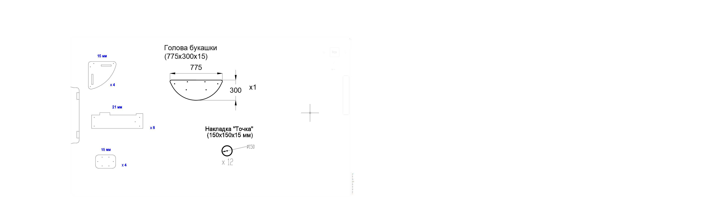
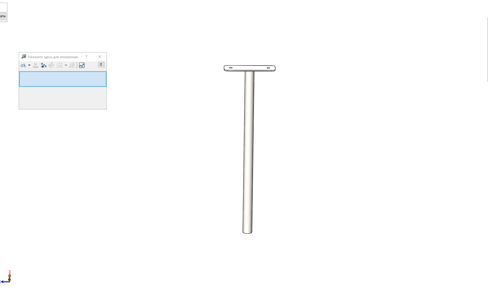

1нет фото0002МПЗакладная для песочницы (уголок 50х50х500)Строка в Excel: 5Размеры и параметрыДлина, м: 50Ширина, м: 5Высота, м: 5ЦветЦвет, RAL 90074шт.
20001МПРучка песочницы ПСР-1.04Строка в Excel: 9Размеры и параметрыДлина, м: 104Ширина, м: 12Высота, м: 21ЦветЦвет, RAL 90072шт.
30003МПУголок 55х55х40Строка в Excel: 13Размеры и параметрыДлина, м: 6.2Ширина, м: 6.2Высота, м: 4ЦветЦвет, RAL 90078шт.
4000003.П.21.0Борт верхний (песочницы) 1707 x 145 x 21Строка в Excel: 17Размеры и параметрыДлина, м: 176Ширина, м: 145Высота, м: 2.1ЦветЦвет, RAL 30204шт.
5000004.П.21.1Борт боковой (песочницы) 760 x 236 x 21Строка в Excel: 18Размеры и параметрыДлина, м: 76Ширина, м: 22.4Высота, м: 2.1ЦветЦвет, RAL 30204шт.
6000004.П.21.0Борт боковой (песочницы) 760 x 236 x 21Строка в Excel: 19Размеры и параметрыДлина, м: 76Ширина, м: 22.4Высота, м: 2.1ЦветЦвет, RAL 60184шт.
7000002.П.15.0Соединитель бортов (песочницы) 300 x 200 x 15Строка в Excel: 20Размеры и параметрыДлина, м: 30Ширина, м: 20Высота, м: 1.5ЦветЦвет, RAL 80144шт.
8000005.П.15.0Столик угловой (песочницы) 411 x 411 x 15Строка в Excel: 24Размеры и параметрыДлина, м: 41.1Ширина, м: 41.1Высота, м: 1.5ЦветЦвет, RAL 60184шт.
9000001.П.15.0Крышка (песочницы) 1590 x 875 x 15Строка в Excel: 28Размеры и параметрыДлина, м: 159Ширина, м: 87.5Высота, м: 1.5ЦветЦвет, RAL 30202шт.
10000006.П.15.0Голова (песочница-букашка) 775 x 300 x 15Строка в Excel: 29Размеры и параметрыДлина, м: 77.5Ширина, м: 30Высота, м: 1.5ЦветЦвет, RAL 80141шт.
11000007.П.15.0Точка (песочница-букашка) 150 x 150 x 15Строка в Excel: 30Размеры и параметрыДлина, м: 15Ширина, м: 15Высота, м: 1.5ЦветЦвет, RAL 801410шт.
12000007.П.15.0Точка (песочница-букашка) 150 x 150 x 15Строка в Excel: 31Размеры и параметрыДлина, м: 15Ширина, м: 15Высота, м: 1.5ЦветЦвет, RAL 70472шт.
130004МППодпорка головы (песочница-букашка)Строка в Excel: 32Размеры и параметрыДлина, м: 55Ширина, м: 12Высота, м: 4ЦветЦвет, RAL 90071шт.
15КЧМ6КСЗаглушка К4М6КССтрока в Excel: 37Размеры и параметрыДлина, м: 2.7Ширина, м: 2.7Высота, м: 1.6ЦветЦвет, RAL черный72шт.
16КЧМ8КСЗаглушка К4М8КССтрока в Excel: 38Размеры и параметрыДлина, м: 3.6Ширина, м: 3.6Высота, м: 2.3ЦветЦвет, RAL черный36шт.